The numerical results in this section provide some samples of the quality of the
 -conforming FEM
with Nédélec elements of first type and lowest order (polynomial degree 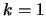).
-conforming FEM
with Nédélec elements of first type and lowest order (polynomial degree 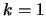).
We considered the model problem (1) in
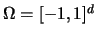, 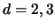,
with homogeneous Dirichlet boundary condition (2).
The first few results for the two-dimensional problem have been obtained by a MATLAB code.
For the first example we used the data
 |
(31) |
For the second example we have followed the outlines from Appendix A and taken the data from example 5
The finite element solution has been computed using Nédélec elements of first type and of polynomial degree on a family of
affine triangular grids.
The initial coarse grid consisted of 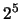 triangles. The finest grid with 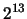 triangles results after five global refinements.
In Table 1 we see that for both examples we have
optimal convergence in the
-semiorm, as we would expect from the theoretical results of the
previous section. As for the
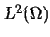-norm, it appears that in both examples the convergence
of the numerical solution is not optimal for our choice of finite elements. In the case of Nédélec elements of first
type and of polynomial degree , we got only
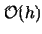-convergence of the 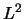-error. However, this order of
convergence is consistent with the result (29) obtained by Nédélec in [8].
Table 1:
Errors and convergence rates in the
-norm and
 -seminorm for the two MATLAB examples.
-seminorm for the two MATLAB examples.
| |
grid |
cells |
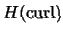-error |
-error |
| |
1 |
32 |
6.66e-01 |
- |
4.66e-01 |
- |
| |
2 |
128 |
3.33e-01 |
1.00 |
2.35e-01 |
0.98 |
| example 1 |
3 |
512 |
1.66e-01 |
1.00 |
1.17e-01 |
0.99 |
| |
4 |
2048 |
8.33e-02 |
1.00 |
5.89e-02 |
0.99 |
| |
5 |
8192 |
4.17e-02 |
1.00 |
2.95e-02 |
0.99 |
| |
1 |
32 |
3.05e+00 |
- |
6.48e-01 |
- |
| |
2 |
128 |
1.61e+00 |
0.91 |
3.22e-01 |
1.00 |
| example 2 |
3 |
512 |
0.81e-01 |
0.97 |
1.60e-01 |
1.00 |
| |
4 |
2048 |
0.41e-01 |
0.99 |
8.02e-02 |
1.00 |
| |
5 |
8192 |
2.05e-01 |
0.99 |
4.01e-02 |
1.00 |
|
Figure 1:
Convergence of the FE-approximation to the smooth solution of the MATLAB example (31)
in the
-norm and the
 -seminorm
-seminorm
|
|
Figure 2:
Convergence of the FE-approximation to the smooth solution of the MATLAB example (32)
in the
-norm and the
-seminorm
|
|
REMARK 7
The mesh generation and refinement was done by PDE-toolbox commands. Since the PDE-toolbox does not support three
dimensional grids, we restricted ourselves to 2d problems, and we have so far no numerical results for the case of
tetrahedral grids in 3d.
As for meshes with quadrilateral cells, numerical results were obtained with a deal.II code,
using the finite element class fe/fenedelec.cc. This class provides
Nédélec's
-conforming element of first type and lowest order in two and three space dimensions, on
bilinear quadrilateral, resp. trilinear hexahedral grids. For details about deal.II, see [2].
In the following results were obtained for the model problem (1) in two dimensions using the
data (32).
We computed the solution on five successive
non-affine bilinear grids ( figure 3), each of which was obtained by global refinement of the previous one.
Figure 3:
Non-affine bilinear grid used in the deal.II code, after one refinement step.
|
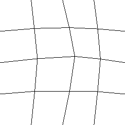
|
Again, in Table 2 we can observe optimal convergence of order
in the
-norm.
The same order of convergence is obtained for the error in the
-norm.
Table 2:
Errors and convergence rates in the
- and
-norm for the 2d-example solved with deal.II.
| grid |
cells |
-error |
-error |
| 1 |
4 |
6.112e+00 |
- |
1.442e+00 |
- |
| 2 |
16 |
3.688e+00 |
0.73 |
6.765e-01 |
1.09 |
| 3 |
64 |
1.991e+00 |
0.89 |
3.280e-01 |
1.04 |
| 4 |
256 |
1.015e+00 |
0.97 |
1.617e-01 |
1.02 |
| 5 |
1024 |
5.098e-01 |
0.99 |
8.049e-02 |
1.01 |
|
With deal.II, we are also able to treat 3d problems on hexahedral grids. For our type of problem,
Nédélec's
-conforming elements of first type and lowest order, based on a cubic reference element, are available.
We computed an approximation to the model problem (1) in 3d using the data
 |
(33) |
In a first experiment, the finite element solution was computed on five successive globally refined affine grids. In a second
computation, we approximated the solution of the same problem on five successive globally refined non-affine trilinear grids.
We see in Table 3 that in both cases we observe again convergence of order
in the
- and the
-norm.
Table 3:
Errors and convergence rates in the
- and
-norm for the 3d-example solved with deal.II. The first data
set is for the computation on a family of affine grids, the second set of data is for non-affine trilinear grids.
| |
grid |
cells |
-error |
-error |
| |
1 |
8 |
7.696e-01 |
- |
6.609e-01 |
- |
| |
2 |
64 |
4.088e-01 |
0.91 |
2.943e-01 |
1.17 |
| affine grids |
3 |
512 |
2.075e-01 |
0.98 |
1.408e-01 |
1.06 |
| |
4 |
4096 |
1.041e-01 |
0.99 |
6.955e-02 |
1.02 |
| |
5 |
32768 |
5.210e-02 |
1.00 |
3.467e-02 |
1.00 |
| |
1 |
8 |
7.716e-01 |
- |
6.611e-01 |
- |
| |
2 |
64 |
4.108e-01 |
0.91 |
2.955e-01 |
1.16 |
| non-affine grids |
3 |
512 |
2.085e-01 |
0.98 |
1.413e-01 |
1.06 |
| |
4 |
4096 |
1.046e-01 |
0.99 |
6.982e-02 |
1.02 |
| |
5 |
32768 |
5.237e-02 |
1.00 |
3.480e-02 |
1.00 |
|
The conclusion that can be drawn from these numerical experiments is, that the restriction to three-dimensional tetrahedral grids
of Hiptmair's result on the -convergence of the error (6) cannot be relaxed.
Finally, here are some pretty pictures: the vector field plots from the MATLAB computations.
Figure 4:
Vector-field plot of the FE-solution of example (31).
|
|
Figure 5:
Vector-field plot of the FE-solution of example (32).
|
|
2003-04-30
![% latex2html id marker 4265
\includegraphics[width=9.5cm, height=7cm]{example1_errors.eps}](img360.gif)
![% latex2html id marker 4271
\includegraphics[width=9.5cm, height=7cm]{example2_errors.eps}](img362.gif)
![\includegraphics[width=9.5cm, height=7cm]{field1.eps}](img365.gif)
![\includegraphics[width=9.5cm, height=7cm]{field2.eps}](img366.gif)